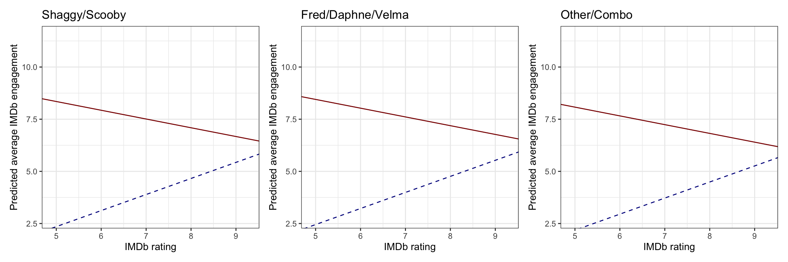
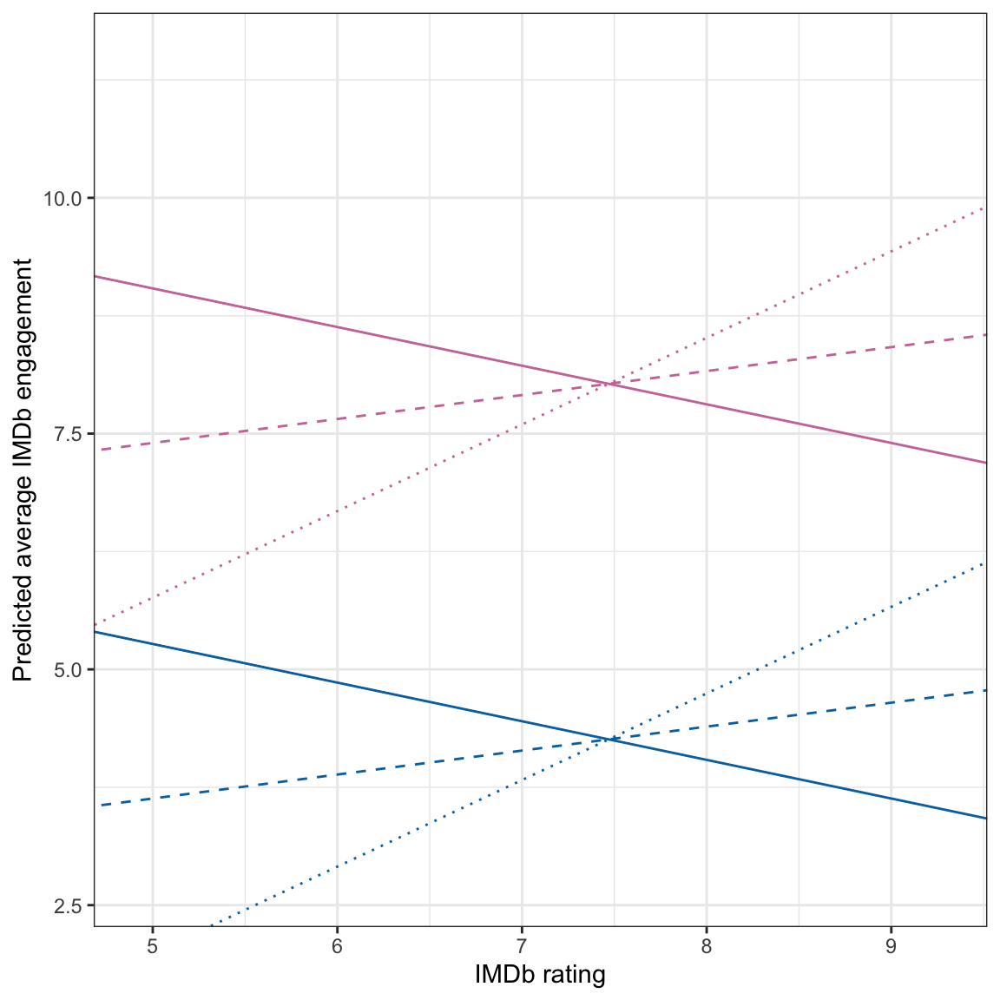

1. Create and report a table of pairwise correlations between engagement, each of the three dummy variables you created to represent caught_by, IMDb rating, number of catchphrases uttered, and the media format dummy variable.
Intercorrelations between seven measures collected from Scooby-Doo TV
episodes and movies.
Measure
1
2
3
4
5
6
7
1. IMDb Engagement
—
2. Shaggy/Scooby
-.07
—
3. Fred/Daphne/Velma
.07
-.63
—
4. Other/Combo
-.00
-.45
-.42
—
5. IMDb Rating
-.24
-.09
.18
-.09
—
6. Catchphrase
.36
.12
-.08
-.04
-.30
—
7. TV
-.77
.04
.04
-.09
.56
-.42
2. Based on the correlation table, can you infer whether or not there will be a sample interaction between between IMDb rating and number of catchphrases uttered? Explain.
No. Correlations do not give us information about interactions.
3. Mimic the format and structure of this table to create a table to present the numerical information from the four models you fitted in this assignment. Make sure the table you create also has an appropriate caption. If the table is too wide, change the page orientation in your word processing program to ``Landscape’’, rather than changing the size of the font. (2pts.)
Table 2 Unstandardized coefficients (and 95% confidence intervals) for a series of regression models fitted to data from n=372 Scooby-doo television episodes and movie to predict variation in IMDb Engagement. In all models, the reference group is movies in which the villain is caught by other/combo.
Model A
Model B
Model C
Caught By
Shaggy/Scooby
0.13
0.17
0.14
(-0.09, 0.34)
(-0.04, 0.37)
(-0.07, 0.35)
Fred/Daphne/Velma
0.26
0.27
0.25
(0.04, 0.48)
(0.06, 0.49)
(0.04, 0.47)
IMDb Rating
0.59
-0.42
0.92
(0.43, 0.75)
(-0.79, -0.04)
(0.73, 1.11)
Cathchphrase
0.02
0.02
0.50
(-0.00, 0.04)
(-0.00, 0.03)
(0.33, 0.67)
Media Format
TV
-4.09
-11.96
-3.77
(-4.44, -3.74)
(-14.67, -9.23)
(-4.12, -3.42)
IMDb Rating x TV
1.19
(0.78, 1.60)
IMDb Rating x Catchphrase
-0.07
(-0.09, -0.04)
Constant
3.74
10.18
1.03
(2.68, 4.81)
(7.75, 12.62)
(-0.38, 2.44)
R2
0.659
0.687
0.685
RMSE
0.80
0.77
0.77
The “Caught By” (reference group is “other/combo”) and “Media Format” (reference group is “movie”) variables are dummy coded.
4. Write the fitted regression equation for Model B.
5. Based on the inferential results from fitting this model, is there an interaction effect between media format and IMDb rating? Explain.
Yes, there an interaction effect between media format and IMDb rating since the p-value associated with the interaction term is quite small (\(p<.001\)). Furthermore, the confidence interval does not include zero.
6. Interpret the coefficient associated with the interaction effect between media format and IMDb rating.
The effect of IMDb rating on IMDb engagement for TV episodes is 1.19 points higher than it is for movies, on average, controlling for differences in who caught the villain, and number of catchphrases uttered.
7. Re-write the fitted regression equation, by writing two fitted equations: one for TV episodes and one for movies. Be sure each equation is identified with the appropriate subgroup.
8. Create and include a plot of the fitted model showing the pertinent results from Model B. Be sure to appropriately differentiate between lines that you include in the plot (e.g., do not differentiate by color unless you plan to print in color). If you partial out any variables, be sure to note this in the caption.
Students could give many plots here. IMDb rating should be put on the x-axis they should show different lines for TV episodes and movies. However, they can pick and choose the other predictors they partial out or show. Here is one example:
Code
# Shaggy/Scoobyp1 =ggplot(data = scoobydoo, aes(x = imdb_rating, y = engagement)) +geom_point(alpha =0) +theme_bw() +geom_abline(intercept =10.45, slope =-0.42, color ="darkred", linetype ="solid") +#moviesgeom_abline(intercept =-1.50, slope =0.77, color ="darkblue", linetype ="dashed") +#tvlabs(x ="IMDb rating",y ="Predicted average IMDb engagement",title ="Shaggy/Scooby")p2 =ggplot(data = scoobydoo, aes(x = imdb_rating, y = engagement)) +geom_point(alpha =0) +theme_bw() +geom_abline(intercept =10.55, slope =-0.42, color ="darkred", linetype ="solid") +#moviesgeom_abline(intercept =-1.40, slope =0.77, color ="darkblue", linetype ="dashed") +#tvlabs(x ="IMDb rating",y ="Predicted average IMDb engagement",title ="Fred/Daphne/Velma")p3 =ggplot(data = scoobydoo, aes(x = imdb_rating, y = engagement)) +geom_point(alpha =0) +theme_bw() +geom_abline(intercept =10.18, slope =-0.42, color ="darkred", linetype ="solid") +#moviesgeom_abline(intercept =-1.67, slope =0.77, color ="darkblue", linetype ="dashed") +#tvlabs(x ="IMDb rating",y ="Predicted average IMDb engagement",title ="Other/Combo")# Layout plotsp1 | p2 | p3

Figure 1: Average IMDb engagement for Scooby-doo movies (red, solid line) and TV episodes (blue, dashed line) as a function of IMDb rating. This is displayed for all three levels of who caught the villain. Number of catchphrases uttered was controlled by setting it to its mean value of 4.87.
9. Write the fitted regression equation for Model C.
10. Based on the inferential results from fitting this model, is there an interaction effect between number of catchphrases uttered and IMDb rating? Explain.
Yes, there an interaction effect between number of catchphrases uttered and IMDb rating since the p-value associated with the interaction term is quite small (\(p<.001\)). Furthermore, the confidence interval does not include zero.
11. Create and include a plot of the fitted model showing the pertinent results from Model C. Be sure to appropriately differentiate between lines that you include in the plot (e.g., do not differentiate by color unless you plan to print in color). If you partial out any variables, be sure to note this in the caption.
Students could give many plots here, depending on which variable they put on the x-axis (IMDb rating or Number of catchphrases uttered) and how they choose values for the other predictors. Here is one example:

Figure 2: Average IMDb engagement for Scooby-doo movies (reddish purple) and TV episodes (blue) as a function of IMDb rating. This is displayed for episodes in which no catchphrases were uttered (dotted line), 10 catchphrases were uttered (dashed line), and 20 catchphrases were uttered (solid line).
12. Use the plot you created in Question 11 to help interpret the interaction effect between number of catchphrases uttered and IMDb rating.
The effect of IMDb rating on IMDb engagement, controlling for who caught the villain and media format, depends on number of catchphrases uttered. Episodes/movies with a number of catchphrases uttered tend to have a lower effect of IMDb rating on IMDb engagement. For episodes/movies with a really high number of catchphrases uttered, the effect of IMDb rating on IMDb engagement is negative.